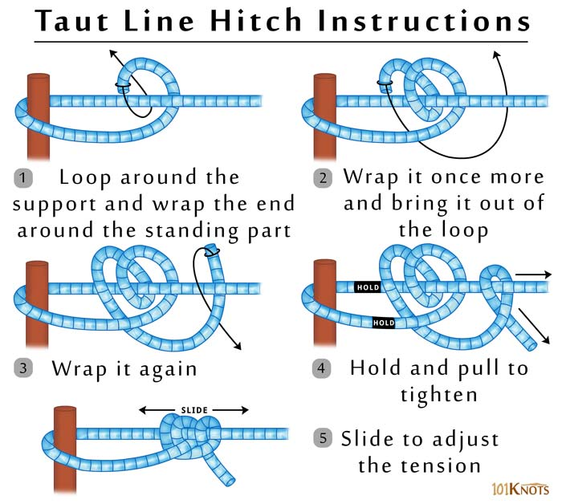

Taut Line Hitch
The taut line hitch takes the place of a slide to tighten or loosen a loop in a line (like a tent guy line). This knot grips well as long as there is tension on the “taut” side of the loop.
How to tie a taut line hitch:
To tie the taut line hitch, create a loop by wrapping around a solid, unmoving object like a tree or tent stake. With the free end of the rope, wrap around the main line twice on the inside of the loop. Then lay the free end of the rope over the two wraps, wrap it around the main line, and draw the tag end through the loop you just created. Cinch the wraps until tight. Pull on the standing line and the taut line hitch should grip the loaded line.
